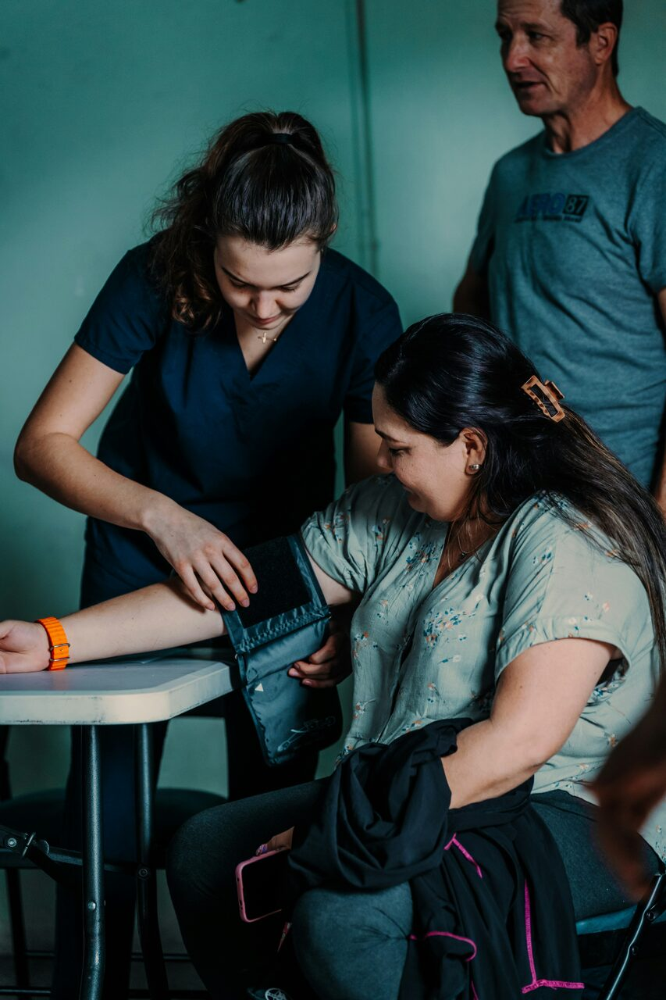
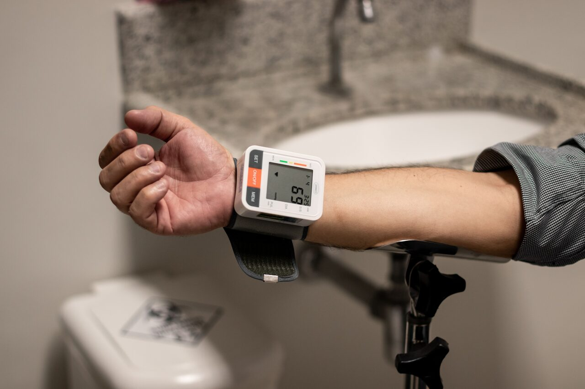
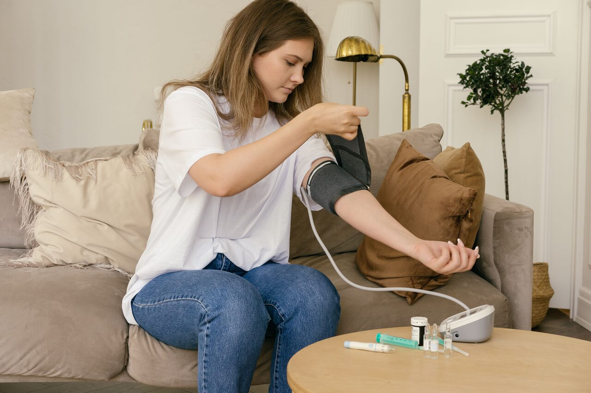
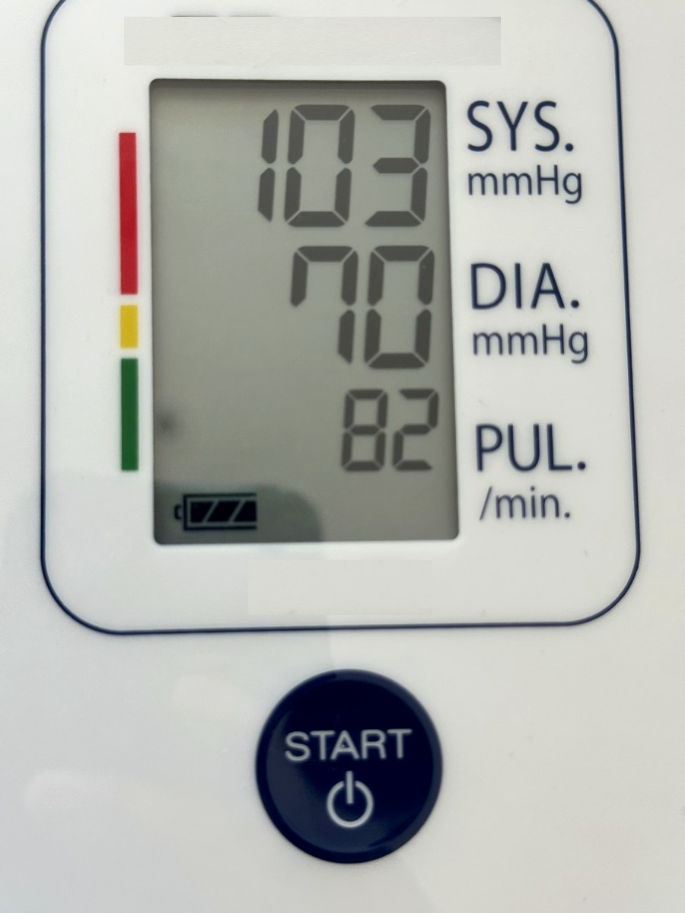
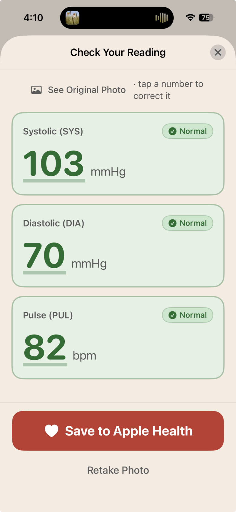
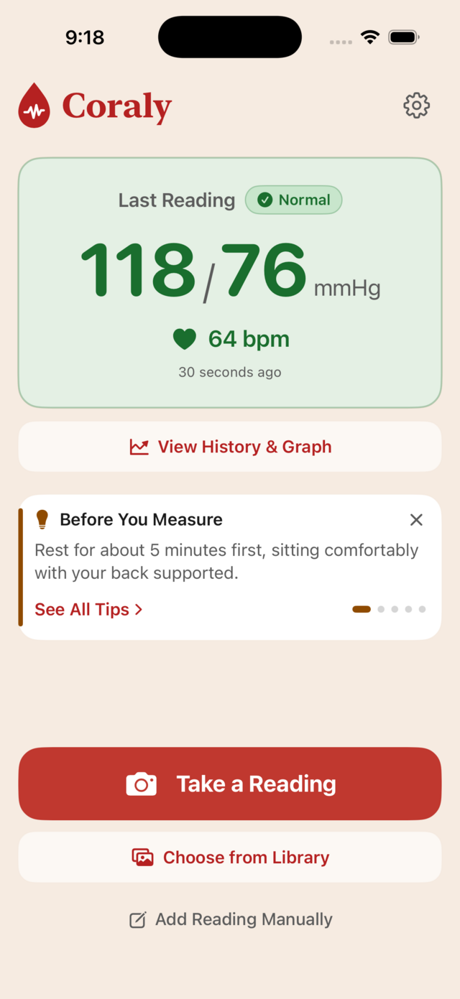
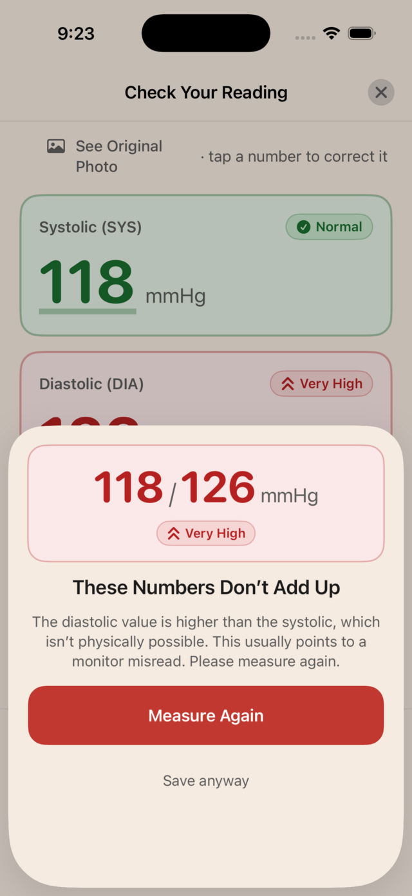
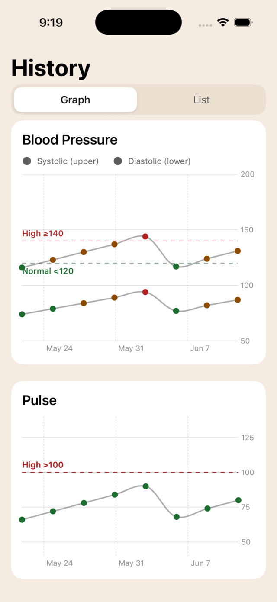
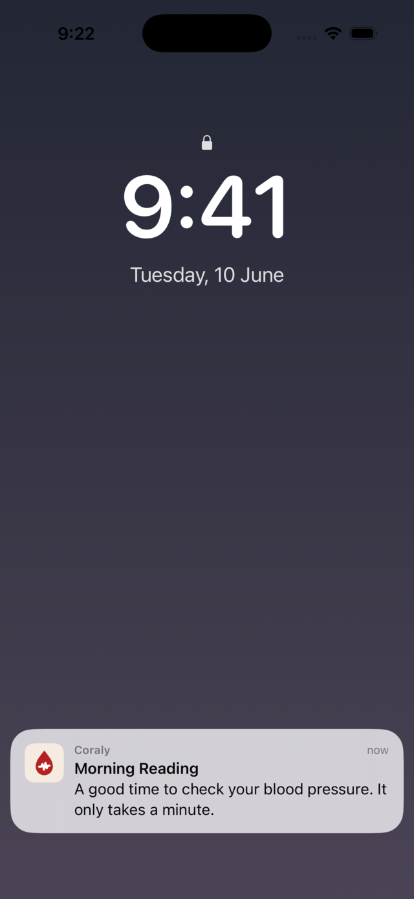
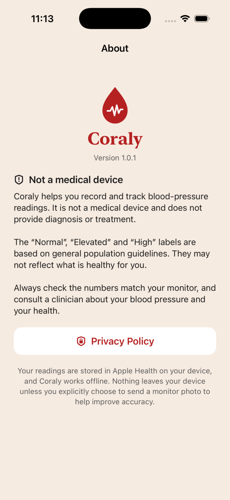

Coraly
Get the app
Coraly
Get the app
One Photo. Logged.
Take a picture of your blood pressure monitor and Coraly does the rest.
Easy. Fast. Private.
Take a Reading
Use the blood pressure monitor you already have.



Photograph It
Coraly automatically reads the numbers.

103 70 82 All three readConfirm and Save
Check the numbers, confirm, and Coraly logs them to your history and Apple Health.

Every reading,
working for you.understood.tracked.protected.
Here’s what Coraly does the moment a reading lands.
Know what your numbers mean.
Every reading is labelled Low, Normal, Elevated or High, so you know where you stand at a glance.

Catches a bad reading.
If the numbers can’t be right, Coraly flags it before it’s saved. A monitor misread never lands in your history.

See your trend at a glance.
Simple charts and averages show where your blood pressure is heading over days and weeks.

A gentle nudge to measure.
Set a reminder and Coraly notifies you around the same time each day.

Private by design.
No account, no ads. Your readings stay on your iPhone and in Apple Health, and nothing leaves your device unless you choose to send a photo to improve accuracy.

What if Coraly misreads my monitor?
You’ll catch it. You always see the numbers next to the photo they came from before anything is saved. One tap corrects a digit, and impossible readings are flagged before they can scare you.
Is Coraly really free?
Yes. Photo logging, your full history, charts, reminders and Apple Health saving are free, with no ads, and will stay that way. If we ever add paid features, they will be additions, never things taken away.
Can Coraly take my blood pressure without a cuff?
No. No app can do that reliably, and Coraly will never pretend to. It logs readings from the validated monitor you already own. It never guesses numbers from your finger or your camera.
Which monitors does Coraly work with?
The one you already own. Coraly is designed to read arm and wrist monitors with a digital display, and detection keeps improving with every update. No pairing, no Bluetooth, nothing new to buy.
Where do my readings and photos go?
Nowhere. Readings live on your iPhone and in your Apple Health app. Photos are read on the device and never leave it unless you choose to send one to help improve accuracy. Read the full privacy policy.
Who makes Coraly?
One person. Hi 👋 I have to check my blood pressure every day as part of my own health routine, and I couldn’t find an app that was calm, beautiful, free and synced properly with Apple Health. So I built one.
Questions, feedback and feature requests are always welcome at support.coraly@gmail.com.